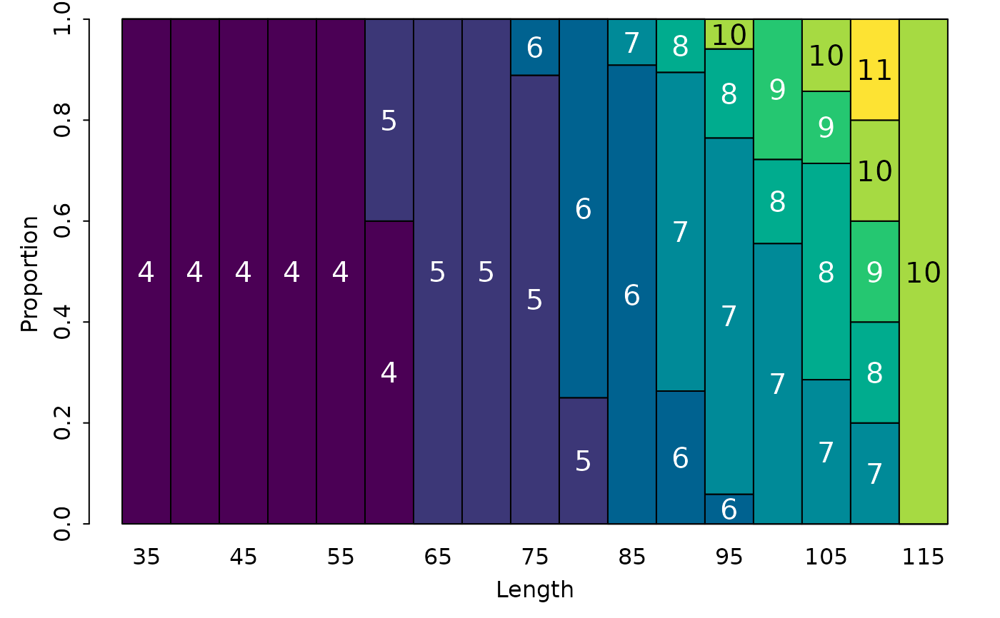
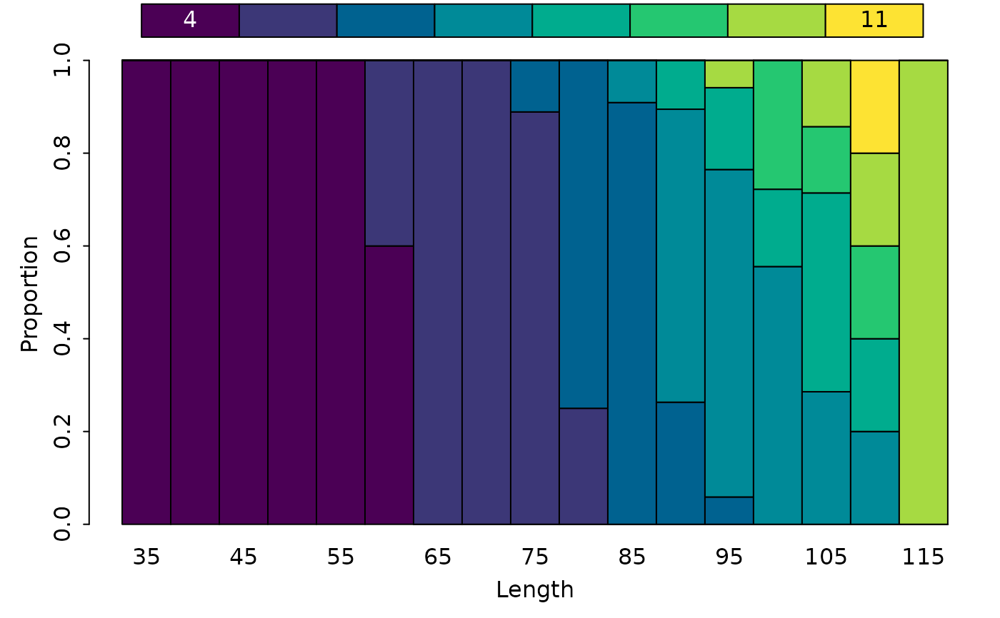
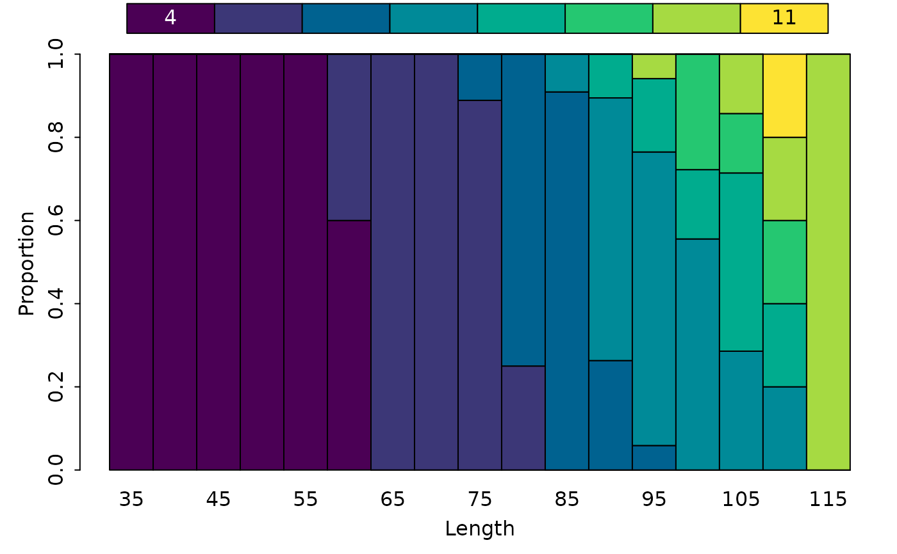
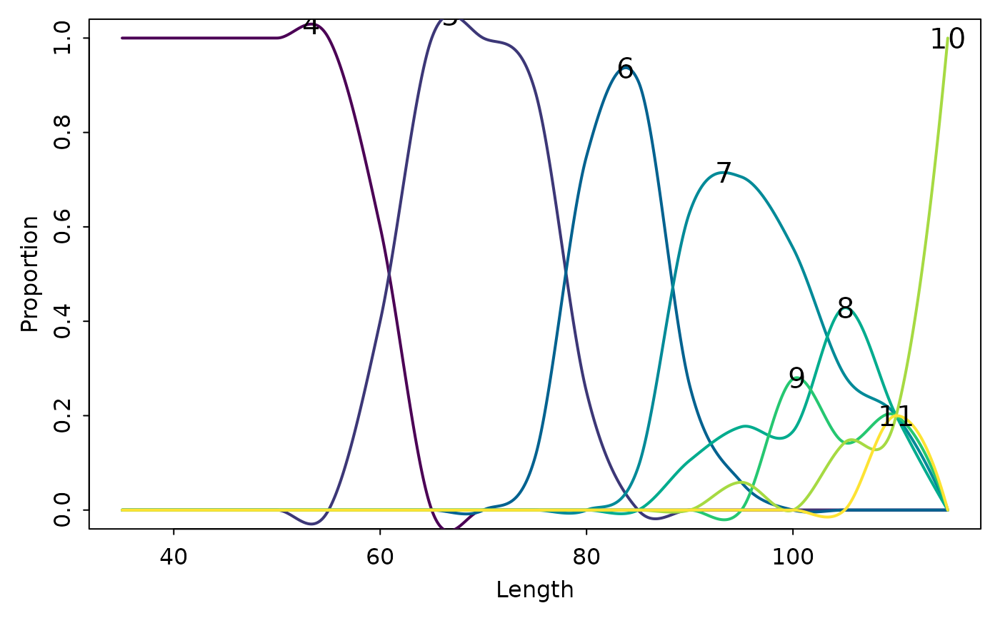
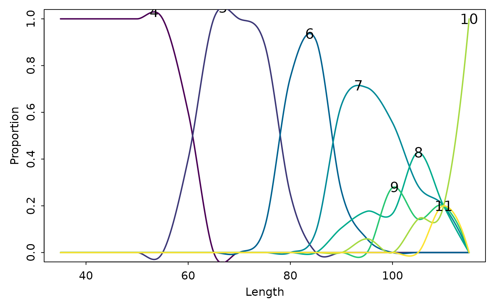

Various plots to visualize the proportion of fish of certain ages within length intervals in an age-length key.
Arguments
- key
A numeric matrix that contains the age-length key.
- type
A string that indicates the type of plot to construct. See details.
- xlab, ylab
A string that contains the label for the x- or y-axis.
- xlim, ylim
A numeric of length 2 that provide the limits for the x-axis or y-axis.
- showLegend
A logical that indicates whether a legend should be displayed (not implemented for
type="bubble"). See examples.- lbl.cex
A numeric character expansion value for labels inside the bars when
type="barplot"or on the lines whentype="lines"ortype="splines". Only used ifshowLegend=FALSE.- leg.cex
A numeric character expansion value for labels on the legend when
showLegend=TRUE.- lwd
A numeric that indicates the line width when
type="lines"ortype="splines".- span
A numeric that indicates the span value to use in
loesswhentype="splines".- grid
A logical that indicates whether a grid should be placed under the bubbles when
type="bubble"or a character or appropriate vector that identifies a color for the grid. See examples.- col
A single character string that is a palette from
hcl.palsor a vector of character strings containing colors for the bars, areas, lines, or spline lines of different ages; defaults to the "viridis" palette inhcl.colors. A single string that indicates the color of the bubbles whentype="bubble".- buf
A single numeric that indicates the relative width of the bubbles when
type="bubble". A value of 0.5 means that two full-width bubbles would touch each other either in the x- or y-direction (i.e., this would represent half of the minimum of the physical distance between values one-unit apart on the x- and y-axes). Set this to a value less than 0.5 so that the bubbles will not touch (the default is 0.45).- add
A logical that indicates whether the data should be added to an already existing plot. May be useful for visually comparing age-length keys. Only implemented when
type="bubble".- ...
Additional arguments to pass to
plotorbarplot.
Details
A variety of plots can be used to visualize the proportion of fish of certain ages within length intervals of an age-length key. The types of plots are described below and illustrated in the examples.
A “stacked” bar chart where vertical bars over length intervals sum to 1 but are segmented by the proportion of each age in that length interval is constructed with
type="barplot". The ages will be labeled in the bar segments unlessshowLegend=TRUEis used.A “stacked” area chart similar to the bar chart described above is constructed with
type="area".A plot with (differently colored) lines that connect the proportions of ages within each length interval is constructed with
type="lines".A plot with (differently colored) lines, as estimated by loess splines, that connect the proportions of ages within each length interval is constructed with
type="splines".A “bubble” plot where circles whose size is proportional to the proportion of fish of each age in each length interval is constructed with
type="bubble". The color of the bubbles can be controlled withcol=and an underlying grid for ease of seeing the age and length interval for each bubble can be controlled withgrid=. Bubbles from a second age-length key can be overlaid on an already constructed bubble plot by usingadd=TRUEin a second call toalkPlot.
Note that all plots are “vertically conditional” – i.e., each represents the proportional ages WITHIN each length interval.
Note
These plots are used primarily to explore the structure of an age-length key. While some may find them of "publication-quality", that level of quality and overall control of aspects of the plot are not the primary purpose of this function. Publication-quality plots can be readily made using ggplot2 as demonstrated in this fishR post.
References
Ogle, D.H. 2016. Introductory Fisheries Analyses with R. Chapman & Hall/CRC, Boca Raton, FL.
See also
See alkIndivAge for using an age-length key to assign ages to individual fish. See hcl.colors for a simple way to choose other colors.
Author
Derek H. Ogle, DerekOgle51@gmail.com
Examples
## Make an example age-length key
WR.age <- droplevels(subset(WR79, !is.na(age)))
WR.age$LCat <- lencat(WR.age$len,w=5)
raw <- xtabs(~LCat+age,data=WR.age)
WR.key <- prop.table(raw, margin=1)
round(WR.key,3)
#> age
#> LCat 4 5 6 7 8 9 10 11
#> 35 1.000 0.000 0.000 0.000 0.000 0.000 0.000 0.000
#> 40 1.000 0.000 0.000 0.000 0.000 0.000 0.000 0.000
#> 45 1.000 0.000 0.000 0.000 0.000 0.000 0.000 0.000
#> 50 1.000 0.000 0.000 0.000 0.000 0.000 0.000 0.000
#> 55 1.000 0.000 0.000 0.000 0.000 0.000 0.000 0.000
#> 60 0.600 0.400 0.000 0.000 0.000 0.000 0.000 0.000
#> 65 0.000 1.000 0.000 0.000 0.000 0.000 0.000 0.000
#> 70 0.000 1.000 0.000 0.000 0.000 0.000 0.000 0.000
#> 75 0.000 0.889 0.111 0.000 0.000 0.000 0.000 0.000
#> 80 0.000 0.250 0.750 0.000 0.000 0.000 0.000 0.000
#> 85 0.000 0.000 0.909 0.091 0.000 0.000 0.000 0.000
#> 90 0.000 0.000 0.263 0.632 0.105 0.000 0.000 0.000
#> 95 0.000 0.000 0.059 0.706 0.176 0.000 0.059 0.000
#> 100 0.000 0.000 0.000 0.556 0.167 0.278 0.000 0.000
#> 105 0.000 0.000 0.000 0.286 0.429 0.143 0.143 0.000
#> 110 0.000 0.000 0.000 0.200 0.200 0.200 0.200 0.200
#> 115 0.000 0.000 0.000 0.000 0.000 0.000 1.000 0.000
## Various visualizations of the age-length key
alkPlot(WR.key,"barplot")

alkPlot(WR.key,"barplot",col="Cork")
 alkPlot(WR.key,"barplot",col=heat.colors(8))
alkPlot(WR.key,"barplot",col=heat.colors(8))
 alkPlot(WR.key,"barplot",showLegend=TRUE)

alkPlot(WR.key,"area")
alkPlot(WR.key,"lines")
alkPlot(WR.key,"barplot",showLegend=TRUE)

alkPlot(WR.key,"area")
alkPlot(WR.key,"lines")
 alkPlot(WR.key,"splines")

alkPlot(WR.key,"splines",span=0.2)
alkPlot(WR.key,"bubble")
alkPlot(WR.key,"splines")

alkPlot(WR.key,"splines",span=0.2)
alkPlot(WR.key,"bubble")
 alkPlot(WR.key,"bubble",col=col2rgbt("black",0.5))
alkPlot(WR.key,"bubble",col=col2rgbt("black",0.5))